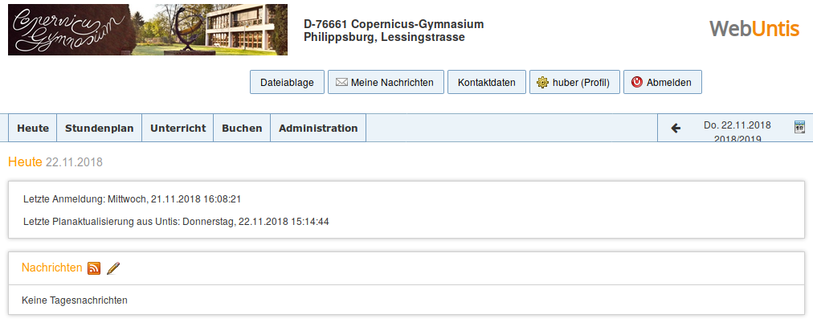

WebUntis¶
WebUntis ermöglicht Ihnen den Zugriff auf den Vertretungsplan, auf ihren eigenen Stundenplan, auf den Stundeplan ihre Klassen, auf die Raumbelegung etc. Außerdem können Sie mit WebUntis Räume buchen oder auch die TV-Wagen, Ipads etc reservieren. Das alte Raumbuchungssystem ist damit obsolet.
Zugriff auf WebUntis¶
WebUntis erreichen Sie über den Link auf der Homepage.
Mit einem Browser¶
Auf der Startseite müssen Sie sich anmelden, um die Möglichkeiten von WebUntis zu nutzen. Verwenden Sie hierzu ihre bekannten Daten, die Sie auch für die Anmeldung in den Computerräumen (Wlan, Copbox etc.) verwenden.

Mit der App¶
Es gibt auch eine App für WebUntis. Diese gibt es für iOS, Android und Windows. Wenn Sie die App herunterladen möchten klicken Sie auf eines der drei Symbole für die App (2.) und befolgen Sie die Anweisungen, die im folgenden Pop-Up-Fenster angezeigt werden. Hier finden Sie auch kurze Hinweise, wie die App konfigurert werden muss. Sie werden aufgefordert, die Schule auszuwählen, indem Sie den Namen der Schule eingeben. Danach müssen Sie sich mit ihren herkömmlichen Anmeldedaten anmelden und schon kann es losgehen.
Wichtig
Bitte beachten Sie: Es gibt zwei Apps für WebUntis. Eine ist kostenlos und bietet nur einen eingeschränkten Funktionsumfang. Unter Umständen wird Ihnen beim Klick auf eine Funktion, die nicht in der Basis-Version verfügbar ist, die „WebUntis Mobile Premium“-App angeboten, die im Moment mit 4,99€ jährlich zu Buche schlägt. Ob Sie das Premium-Angebot nutzen möchten, bleibt Ihnen selbst überlassen. Mittels eines normalen Browsers auf PC, Laptop, Smartphone oder Tablet können Sie WebUntis vollumfänglich nutzen.
Arbeiten mit WebUntis¶
Wenn Sie sich angemeldet haben, gelangen Sie zu einer Übersichts-Seite, über die alle Funktionen von WebUntis erreichbar sind. Wenn Sie auf eine der Schaltflächen 1 bis 3 klicken, öffnet sich ein Drop-down Menu, der Ihnen verschiedenen Optionen anbietet.

ref: stundenplan <Stundenplan>
- Unterricht
- Buchen
- Meine Nachrichten
- Benutzername (Profil)
- Abmelden
- Tagesnachrichten
1. Stundenplan¶
Klicken in diesem Menu auf „Lehrer“, wird Ihnen ihr eigener Stundenplan für die laufende Woche angezeigt. Vertretungen, Aufsichten etc. sind hier schon eingetragen.

Sind in einem Feld ein kleines Ausrufezeichen oder drei kleine Punkte am rechten Rand zu erkennen, heißt das, dass zu dieser Stunde weitere Informationen vorliegen, Mit einem Klicke darauf, werden Ihnen diese angezeigt. Ein Klicken auf der große X oben rechts schließt die Übersicht mit den zusätzlichen Informationen und bringt sie zurück zu Ihrem Stundenplan.
Wichtig
Unten rechts ist Uhrzeit der Erstellung des Stundenplans zu sehen (3.).